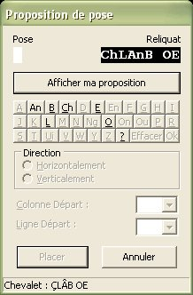
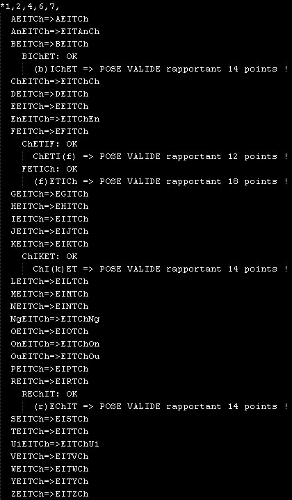
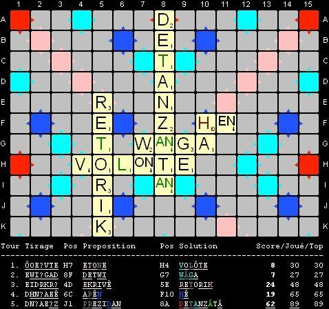
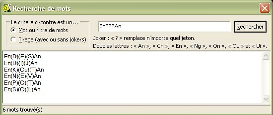

Bienvenue dans l'aide de Diplikata.
Comme vous pouvez le constater, il s'agit d'une aide en HTML.
C'est simple, intuitif, convivial, permettant une recherche facile, compatible avec tous les navigateurs.
Consultez le menu ci-dessous pour accéder à la rubrique souhaitée, ou effectuez une recherche à l'aide de la fonction Rechercher de votre navigateur HTML (Ctrl+F).
Qu'est-ce Diplikata ?
Diplikata est la version en créole haïtien de Duplicata. Il permet de jouer seul au célèbre jeu de mots en mode Duplicate. Il permet également :
- de suivre une partie,
- de jouer le rôle d'arbitre dans une partie Duplicate,
- de donner des outils de recherche de mots.
D'autre part, lorsque vous jouez seul, il vous donne des informations concernant la qualité de votre jeu (rang de votre coup, rapport score/meilleur coup, évolution de votre partie solo, évaluation du niveau de difficulté à chaque tour...).
Présentation du matériel de jeu
Lorsque vous débutez une partie, le jeu se compose de trois fenêtres à l'écran :
- le plateau de jeu (en haut à gauche),
- le chevalet où sont présentés les jetons tirés mais pas encore placés (en haut à droite),
- la feuille de match avec les coups joués et les scores (à droite du plateau de jeu).
Le plateau de jeu, le chevalet et la feuille de match peuvent être redimensionnés...
Commencer une nouvelle partie
Pour commencer une nouvelle partie, il suffit de choisir la rubrique Partie | Nouvelle ou d'utiliser la combinaison de touches Ctrl+N.
Si une partie était en cours, une confirmation vous est demandée.
Si vous confirmez, une deuxième boîte de dialogue vous signifiera que le mélange de jetons est en cours.
Appuyez alors sur le bouton OK pour enfin commencer dès que vous le souhaitez.
Enregistrer une partie et reprendre une partie sauvegardée
Il y a trois rubriques concernant l'enregistrement d'une partie et la reprise d'une partie sauvegardée :
- Pour enregistrer une partie en cours, choisissez la rubrique Fichier | Enregistrer ou appuyez sur la combinaison de touches Ctrl+E : un nom et un emplacement vous seront alors demandés si c'est la première fois que la partie en cours est sauvegardée ;
- Pour enregistrer une partie sous un autre nom, choisissez la rubrique Fichier | Enregistrer sous... ou appuyez sur la combinaison de touches Maj+Ctrl+E : un nom et un emplacement vous seront alors demandés ;
- Pour reprendre une partie sauvegardée, choisissez la rubrique Fichier | Ouvrir ou appuyez sur la combinaison de touches Ctrl+O : un nom et un emplacement vous seront alors demandés ;
Plusieurs signes indicateurs concernent la gestion des parties sauvegardées :
- si une partie a été enregistrée, son nom apparaît dans le titre de la fenêtre du plateau de jeu,
- si une partie a changé depuis la dernière sauvegarde, un astérisque (*) apparaît dans le titre de la fenêtre du plateau de jeu.
Remarque : lorsqu'une partie est terminée, on vous demande si vous souhaitez enregistrer la fin de partie mais il n'est plus possible de l'enregistrer par la suite.
Laisser l'ordinateur jouer tout seul
Vous pouvez lancer une démonstration dans laquelle le meilleur coup est joué. Pour ce faire, choisissez la rubrique Fichier | Démonstration ou appuyez sur la touche F12.
Pour interrompre la démonstration, appuyez à nouveau sur la touche F12.
Vous ne pouvez pas jouer un coup sur une partie de démonstration interrompue. Vous pouvez néanmoins le faire si vous la sauvegardez puis la rouvrez.
N'importe quelle partie peut être poursuivie en mode démonstration en appuyant sur la touche F12.
Préparer et jouer son coup
Si une partie est en cours et qu'aucune jauge n'est affichée, c'est à vous de jouer !
Votre tour se résume en trois phases :
Arrangement des jetons sur le chevalet en vue de leur placement sur le plateau de jeu
Lorsqu'un coup vient d'être joué, le chevalet présente le nouveau tirage en deux parties :
- à gauche sont rangés les jetons du reliquat (jetons non joués lors du tour précédent),
- à droite sont rangés les jetons qui viennent d'être tirés.
Les lettres chères sont affichées en couleur sur les jetons : rouge foncé pour les lettres à dix points.
À la souris
Deux actions sont proposées, avec la souris, pour changer la disposition des jetons sur le chevalet :
Au clavier
Vous pouvez manipuler le contenu du chevalet, au clavier, de deux façons.
- Soit en permutant deux jetons. Pour ce faire, il suffit de taper le rang des deux jetons à permuter. Dans l'exemple ci-dessous, on souhaite former le mot EVASE alors on permute les premier (A) et cinquième (O) jetons en appuyant sur les touches 1 puis 5...
- Soit en sélectionnant un jeton puis en utilisant les touches fléchées pour le déplacer à gauche ou à droite tout en laissant la sélection sur le jeton (un jeton sélectionné au clavier apparaît en bleu). Dans le même exemple de tirage que ci-dessus, pour former le mot VETIJ, on sélectionne le J en appuyant sur 2 (deux comme sa position dans le chevalet) puis on utilise la touche fléchée droite six fois de suite afin de placer le J après le I. Attention, le jeton J est toujours sélectionné.
Pour retirer la sélection clavier sur un jeton (qui apparaît en bleu), il suffit soit d'appuyer sur la touche 0 (zéro), soit de taper le chiffre correspondant à son rang. Dans la fin de l'exemple ci-dessus, la sélection sur le J est retirée soit en appuyant sur 0 (zéro), soit en appuyant sur 5.
Afin de préparer le placement des jetons sur le plateau de jeu, vous devez les rassembler dans l'ordre de placement (pas nécessairement contigus ou au début du chevalet).
Sélection des jetons du chevalet qui sont à placer sur le plateau de jeu
À la souris
Une fois que vous avez regroupé les jetons à placer, vous devez les sélectionner en utilisant le glisser-déplacer droit. Pour ce faire :
- regroupez ensemble tous les jetons à placer (voir paragraphe précédent) ;
- cliquez avec le bouton droit de la souris sur le premier jeton à placer, puis
- en maintenant enfoncé le bouton droit, déplacez le pointeur jusqu'au dernier jeton à placer et enfin,
- relâchez le bouton : les lettres sélectionnées apparaissent en rouge.
Dans notre exemple, on souhaite placer les lettres APEL sur le plateau de jeu :
Au clavier
La sélection des jetons à placer sur le plateau de jeu à l'aide du clavier est simple. Il suffit d'appuyer sur la touche * puis le rang des premier et dernier jetons de la sélection sur le chevalet. Dans notre exemple, il faut donc taper sur le pavé numérique *47 car le jeton A est le quatrième jeton du chevalet et le L, le septième.
Pour retirer la sélection (en rouge) des jetons à placer, il suffit de taper ** ou *0 (étoile zéro). Si vous avez commencé à taper * puis un chiffre, la sélection peut être annulée en tapant * ou 0 (zéro).
Choix de la case et de la direction du mot principal
Si au moins un jeton est sélectionné sur le chevalet (les jetons sélectionnés pour la pose apparaissent en rouge), le choix du placement s'effectue en plusieurs étapes.
Dans notre exemple, on souhaite former le mot APEL en plaçant les jetons A, P, E et L verticalement à partir de la case L15 indiquée par le cadre blanc :
À la souris
- Cliquez gauche sur la case où sera placé le premier jeton sélectionné (le jeton rouge le plus à gauche sur le chevalet) ; Si la case est occupée, le premier jeton sera posé sur la prochaine case vide dans la direction choisie (dans notre exemple, il s'agit de placer le A sur la case L15).
- Choisissez dans le menu déroulant qui apparaît la direction du mot : horizontalement ou verticalement (dans notre exemple, il faut choisir Placer Verticalement).
- Si un ou plusieurs jokers sont placés, on vous demandera la lettre qui sera associée au joker jusqu'à la fin de la partie : voir Choix du jeton pour un joker à placer.
Au clavier
- Appuyez sur la touche +.
- Appuyez sur le ou les chiffres correspondant à la colonne de la case où sera placé le premier jeton (de 1 à 15) ; Dans l'exemple, il faut appuyer sur la touche 1 puis 5 car s'agit de placer le A sur la case L15.
- Appuyez sur la lettre correspondant à la ligne de la case où sera placé le premier jeton (de A à O) ; Dans l'exemple, il faut donc appuyer sur la touche L.
- Appuyez enfin sur la touche H pour choisir la direction horizontale ou V pour choisir la direction verticale ; Dans l'exemple, il faut appuyer sur la touche V.
- Si un ou plusieurs jokers sont placés, on vous demandera la lettre qui sera associée au joker jusqu'à la fin de la partie ; Dans l'exemple (voir Choix du jeton pour un joker à placer).
La séquence complète de touches pour définir la pose dans notre exemple est donc +15LV ou +15lv.
Vous pouvez annuler à tout moment une saisie en cours en appuyant sur la touche +.
Choix du jeton pour un joker à placer
Une boîte de dialogue demande, le cas échéant, la valeur du joker posé. Dans l'exemple ci-dessous, on souhaite attribuer An pour former le mot ChAn :
Pour sélectionner un jeton au clavier...
- Il suffit de taper la lettre soulignée du bouton pour les jetons à une lettre, pour Ch et pour Ui.
- Pour choisir les autres jetons à double lettre, il faut utiliser les touches suivantes :
- @ pour An
- & pour En
- $ pour Ng
- ° pour On
- ù pour Ou
- # pour Oun*
(*) Depuis la version 1.8, un nouveau jeton a été ajouté : Oun (Ü).
Validation de la proposition
Si votre proposition est valide (pose valide et mots formés valides selon le dictionnaire de référence), alors elle apparaît en jaune accompagnée du score obtenu.
Les jokers sont en gris. Voici ce que cela donne dans notre exemple :
Si votre proposition n'est pas valide un message vous en donne la cause et le remède si les sanctions ne sont pas appliquées (voir le paramétrage des propositions invalides sanctionnées) :
De plus, si le temps est écoulé ou l'option Propositions invalides sanctionnées est activée (voir les paramètres de jeu), vous ne pouvez pas rejouer et votre tour ne rapporte aucun point.
Si vous souhaitez passer votre tour, choisissez la rubrique Actions | Passer son tour ou utilisez la combinaison de touches Ctrl+P.
Test d'une proposition
Il est possible de tester un coup sans qu'il soit joué. Dans ce cas, seuls la pose sur le plateau de jeu et le score sont montrés. La possibilité de pose est vérifiée, mais pas les mots formés.
Lorsque vous choisissez la case cible sur le plateau de jeu :
- à la souris, il faut utiliser le clic droit à la place du clic gauche quand vous pointez le curseur de la souris sur la case cible ;
- au clavier, il faut utiliser la touche # à la place de la touche + au début de la séquence de saisie des coordonnées et de la direction. Comme pour la touche +, la touche # permet d'interrompre une séquence de saisie à tout moment.
Lors du choix de la direction, la case cible est entourée d'un cadre blanc clignotant et ce menu déroulant apparaît à côté :
Il faut choisir la direction en cliquant sur la ligne correspondante au choix ou en appuyant sur la touche H pour la direction horizontale ou la touche V pour la direction verticale.
Une fois le choix de la direction effectué, le coup est posé sur le plateau de jeu et le score obtenu est affiché sous réserve que le(s) mot(s) formé(s) soi(en)t validé(s) :
Fin de partie
Il y a trois cas de fin de partie :
- il n'y a plus de jeton : ni dans le sac, ni sur le chevalet ;
- le tirage est insuffisant (pas assez de consonnes ou de voyelles) et il y a moins de sept jetons dans le sac ;
- il n'y a aucune solution possible à placer sur le plateau de jeu.
Dans les trois cas, un message s'affiche et vous propose d'enregistrer la fin de partie.
Attention, répondre Non rend impossible l'enregistrement de la partie par la suite (manuel ou automatique).
Recherche des solutions et solution retenue
Quand vous avez donné votre proposition ou passé votre tour, l'ordinateur cherche les solutions rapportant le plus de points (ou d'une qualité moindre selon le paramétrage).
Dès qu'il a terminé, trois cas peuvent se présenter :
Remarques :
- comme montré dans les deux exemples ci-dessus, dans la ou les solutions retenues chaque joker utilisé est indiqué par des parenthèses entre lesquelles se trouve le jeton choisi ;
- lors de l'affichage de la solution ou des solutions trouvées, les statistiques concernant votre proposition sont affichées (score relatif et rang).
Si vous avez passé votre tour, le rang de votre proposition est alors le nombre de solutions possibles plus un ;
- la qualité et le type de qualité des solutions recherchées pour la pose, sont affichés juste après leur score (dans les exemples, il s'agit de 100 % du top). La qualité est paramétrable (par défaut, les solutions recherchées sont les tops).
Notes :
- (*) Lorsqu'un ou plusieurs jokers sont à placer et que le joker est remplacé par une lettre présente au moins une deuxième fois dans le mot principal du top, alors une seule possibilité est proposée.
Dans l'exemple précédent où il faut choisir parmi 10 solutions, la liste propose comme tops aLATERNE ALERTENt aRANTELE LAnTERNE et RELATENt.
Il y a d'autres possibilités pour ces mots où le joker peut être placé sur la même lettre, mais pas à la même position : ALaTERNE ALERtENT ARaNTELE LANTERnE et RELAtENT.
Elles ne sont pas présentées, car non pertinentes. Vous pouvez néanmoins les proposer (voir Proposition d'une solution autre qu'un top ci-dessous).
- (**) Les solutions sont triées par ordre de préférence (voir ci-après) puis par ordre alphabétique du tirage.
Le rang affiché avant la solution dans la liste, est déterminé suivant la règle de choix en mode Duplicate suivante :
- D'abord, les solutions utilisant le moins de jokers sont prioritaires ;
- Ensuite, si le nombre de jetons sur le chevalet est inférieur à sept alors...
- les solutions utilisant tous les jetons du chevalet sont prioritaires ;
sinon...
- les solutions utilisant le moins de jetons du chevalet sont prioritaires
- Enfin, les solutions ayant la valeur placée la plus faible (total de la valeur des jetons à placer) sont prioritaires.
Proposition d'une solution autre qu'un top
Si vous ne souhaitez pas jouer un top (vous suivez une partie par exemple), alors vous pouvez annuler le choix de la meilleure solution :
- s'il y a plusieurs solutions ayant le meilleur score alors cliquez sur le bouton de fermeture ou utilisez la touche Echap ou la combinaison de touches Alt+F4,
- s'il n'y a qu'une seule solution ayant le meilleur score alors cliquez sur le bouton Annuler ou appuyez sur la touche Echap.
Dans les deux cas apparaît une boîte de dialogue vous permettant de spécifier n'importe quelle solution valide à poser sur le plateau de jeu :

Le bouton Afficher ma proposition (ou touche Entrée) permet d'afficher les jetons, coordonnées de la case et direction de la proposition que vient de faire le joueur. Il reste alors juste à valider en appuyant sur le bouton Placer.
Si vous ne souhaitez pas poser la proposition du joueur, il faut alors choisir les jetons à placer puis les coordonnées et la direction de la pose sur le plateau de jeu.
La première phase consiste à choisir les jetons à placer :
- Le haut de la boîte de dialogue montre les jetons à placer à gauche en noir sur fond blanc (aucun au départ) et le reliquat correspondant à droite en blanc sur fond noir (tout le tirage au départ).
- Sous les jetons affichés, apparaissent les boutons permettant de choisir les jetons :
- Pour choisir un jeton, il suffit de taper la lettre soulignée du bouton pour les jetons à une lettre, pour Ch et pour Ui ;
- Pour choisir les autres jetons à double lettre, il faut utiliser les touches suivantes : @ pour An, & pour En, $ pour Ng, ° pour On, ù pour Ou et # pour Oun* ;
- le bouton ? (ou combinaison de touches Ctrl+J) permet de sélectionner un joker (espace dans la partie des jetons) ;
- le bouton Effacer (ou touche Retour Arrière) permet de retirer le dernier jeton choisi ;
- le bouton Ok (ou touche Entrée) permet de valider le choix des jetons et de passer à la phase suivante (positionnement).
(*) Depuis la version 1.8, un nouveau jeton a été ajouté : Oun (Ü).
La deuxième phase consiste à choisir la position de la solution sur le plateau de jeu. Pour passer à cette phase, il faut avoir choisi les jetons puis appuyé sur le bouton Ok ou la touche Entrée.
La première partie est alors inaccessible et la deuxième partie devient accessible :
La direction de la proposition et les coordonnées du premier jeton à placer sont à définir.
Si vous spécifiez les coordonnées d'une case déjà occupée, les jetons se placeront à la suite et dans l'ordre choisi dans la première phase.
Une fois les informations entrées, appuyez sur le bouton Placer ou sur la touche Entrée.
Lorsque vous validez la position et la direction, la proposition est vérifiée comme pour la proposition du joueur :
- si un joker fait partie des jetons à placer alors on vous demande le choix du jeton à attribuer,
- si la solution n'est pas valide alors un message vous en indique la raison.
Si vous ne pouvez pas poser votre proposition, appuyez sur le bouton Annuler ou la touche Echap pour revenir au choix d'une des meilleures solutions. De là vous pourrez à nouveau revenir au choix d'une proposition.
Paramétrer le jeu
Tous les paramètres de jeu sont rassemblés dans le menu Options du menu principal. Voici le menu dans son état par défaut :

Voici les paramètres qui sont modifiables selon l'ordre du menu Options avec entre parenthèses l'état de l'option qui correspond :
Journal de recherche des solutions
Lorsque cette option est activée (cochée), un fichier de trace est alimenté permettant de suivre les différentes étapes de recherche des solutions.
Il faut être vigilant car le fichier peut vite grossir en volume. En effet, pour vous donner une idée, une partie entière peut générer un fichier de douze mégaoctets et plus de six cents mille lignes.
Lorsque vous désactivez l'option (décochez), le fichier de trace est affiché. Il ressemble à ceci :

Décodage du journal
Avant la recherche, une ligne de pointillés est tracée.
Ensuite le tirage est affiché dans l'ordre courant puis trié. Attention, un espace indique la présence d'un joker.
Exemple (il y a un joker) :
KALOU S=> AKLOSU
Chaque case est évaluée.
Les coordonnées sont affichées en tête de ligne (Ligne+Colonne) puis le résultat sur la recherche.
Si la case est vide alors Libre est écrit à droite des coordonnées de la case.
Ensuite si un placement de jetons est possible (contiguïté avec jetons présents sur le plateau), sont alors indiqués sur la ligne suivante la direction puis le nombre de jetons que l'on peut poser (min/max).
Exemple :
H1: Libre
Horizontalement: Pose possible (6~7 jetons)
Ensuite on recherche toutes les possibilités de jetons à placer.
Sont alors affichées la liste des numéros d'ordre des jetons selon le tirage trié en tête de recherche (affiché après les pointillés).
Un astérisque précède le rang du jeton joker.
Exemple (*1,2,3,4,5,6 = ?,A,K,L,O,S) :
H1: Libre
Horizontalement: Pose possible (6~7 jetons)
*1,2,3,4,5,6,
Ensuite sont affichées les lettres des jetons choisis.
Si un joker est présent, il y aura 26 lignes. S'il y en a deux, 676 lignes !
A droite du tirage en lettres, le tirage est retrié si des jokers sont présents.
Exemple :
H1: Libre
Horizontalement: Pose possible (6~7 jetons)
*1,2,3,4,5,6,
[...]
IAKLOS=>AIKLOS
JAKLOS=>AJKLOS
KAKLOS=>AKKLOS
LAKLOS=>AKLLOS
MAKLOS=>AKLMOS
NAKLOS=>AKLNOS
OAKLOS=>AKLOOS
PAKLOS=>AKLOPS
Si des lettres sont présentes sur le plateau de jeu, elles sont indiquées après le symbole < (après la pose) ou > (avant la pose).
Exemples (on raccroche des jetons respectivement après la lettre N et avant la lettre V du mot VAIN) :
*1,2,4,5,6,
AALOS>VAIN=>AAAILNOSV
*1,4,5,
ALO<V=>ALOV
Dès qu'un mot est trouvé avec le tirage obtenu il est affiché.
Si le mot peut être placé (c'est-à-dire que les lettres déjà placées concordent avec les lettres du mot trouvé) alors le mot OK est affiché.
Exemple :
H1: Libre
Horizontalement: Pose possible (6~7 jetons)
*1,2,3,4,5,6,
AAKLOS=>AAKLOS
KOALAS: OK
Si un ou plusieurs jokers sont présents, on évalue toutes les possibilités et on indique à droite le résultat.
Si les autres mots formés ne sont pas corrects, c'est indiqué. Sinon, c'est indiqué POSE VALIDE et le nombre de points obtenus.
La présence de jokers dans les solutions sont matérialisée par des parenthèses.
Exemple :
*1,2,5,
[...]
LAO<V=>ALOV
LOVA:
VOLA: OK
VOLA => POSE VALIDE rapportant 9 points !
VO(L)A => Autres mots formés non valables.
Génération automatique de la feuille de match détaillée
Lorsque cette option est activée (cochée) dans le menu Options, la feuille de match détaillée sous format HTML est générée automatiquement à la fin de chaque tour si la partie a été sauvegardée au moins une fois (partie enregistrée ou ouverte).
Pour éviter d'ouvrir le navigateur à chaque tour afin de visualiser la feuille de match détaillée, procédez comme suit :
Génération et affichage de la liste de toutes les solutions
Lorsque cette option est activée (cochée), une page HTML est générée et affichée après chaque coup joué.
Elle est toujours générée dans le même dossier que celui de l'application Diplikata.exe et se nomme toujours Solutions.html.
Par conséquent, chaque nouvelle page écrase la précédente.
Si vous voulez la sauvegarder, utilisez la commande Enregistrer sous... depuis le navigateur avec lequel elle est affichée, puis donnez un autre nom.
Cette option n'est pas activée par défaut.
Les solutions sont triées par ordre de qualité décroissante, c'est-à-dire, selon les critères suivants :
- ordre décroissant du score de la solution, puis
- ordre croissant du nombre de jetons placés, puis
- ordre croissant de la valeur placée (somme des points des jetons placés hors bonus).
Remarque : sur les mots posés, les jokers sont indiqués par des minuscules.
Voici un exemple de page générée (sur la page HTML, le tableau est sous la grille) :
Enregistrement automatique de la partie
Cette option permet d'enregistrer automatiquement la partie en cours après chaque coup joué.
L'option n'est effective qu'après avoir enregistré une première fois manuellement la partie.
Attention : si l'option est activée et qu'une partie se termine, celle-ci n'est pas enregistrée après le dernier coup. L'enregistrement de fin de partie est demandé explicitement. Si vous répondez Non, il n'est alors plus possible d'enregistrer la fin de partie.
Qualité des solutions pour le choix de la pose
Lorsque l'on choisit la rubrique Qualité des solutions pour le choix de la pose dans le menu Options ou lorsque l'on utilise la combinaison de touches Ctrl+Q, la boîte de dialogue suivante apparaît :
Par défaut (comme ci-dessus), la ou les solutions proposées pour la pose sont des tops.
Il est donc possible de demander d'afficher des solutions de moindre qualité en fonction de deux types de qualité possibles :
- Le rapport entre le score et le top. Par exemple, si le top est de 50 points et que l'on a choisi une qualité de 75 % du top alors on affichera la liste des solutions dont le score sera supérieur ou égal et le plus proche de 38 points (75 % de 50 points arrondis au point près).
- Le rang de la solution suivant l'ordre décroissant du score sachant que 100 % correspond à premier. Par exemple, si le nombre de solutions est de 234 et que l'on a choisi une qualité de 90 % du rang alors on affichera la solution qui est au douzième rang (1+234*5/100 en retirant la partie décimale).
Lorsque vous changez le type de qualité, la valeur de la qualité est changée et définie par défaut :
- pour le type Top, la qualité est fixée à 100 % (non modifiable),
- pour le type Rapport Score/Top, la qualité est fixée à 50 % (modifiable avec un minimum de 10 %),
- pour le type Rang, la qualité est fixée à 90 % (modifiable avec un minimum de 50 %).
Remarques :
Placement automatique de la proposition
Cette option (décochée par défaut) permet de placer automatiquement et sans confirmation la proposition à la place d'un des tops proposés.
Si l'option est cochée, le choix d'un top de la liste des solutions entraîne automatiquement le placement de la proposition sauf dans les cas suivants :
- Si la proposition à placer contient des jokers, les lettres qui doivent figurer sur les jokers sont demandées une nouvelle fois. Si le choix des lettres entraîne une proposition incorrecte, la boîte de dialogue de proposition de pose s'affiche alors.
- Si le joueur passe son tour, la boîte de dialogue de proposition de pose s'affiche.
Types de partie
Il est possible de choisir un type spécifique de partie au niveau du temps de réflexion et au niveau du tirage.
Attention :
- Les paramètres de type de partie ne concernent que les nouvelles parties et non une partie en cours.
- Une fois qu'une partie est commencée, ces paramètres ne peuvent plus être changés au niveau de la partie.
Pour modifier les paramètres de type de partie, il faut aller dans le menu Options | Type de partie :

Temps de réflexion
Il est possible de jouer une partie avec un temps de réflexion normal ou réduit :
- soit une partie normale (par défaut) avec un temps de réflexion classique de 3 minutes, en choisissant la rubrique Normale (3 minutes) ou en utilisant le raccourci clavier Ctrl+3,
- soit une partie semi-rapide avec un temps de réflexion classique de 2 minutes, en choisissant la rubrique Semi-rapide (2 minutes) ou en utilisant le raccourci clavier Ctrl+2,
- soit une partie blitz avec un temps de réflexion classique d'1 minute, en choisissant la rubrique Blitz (1 minute) ou en utilisant le raccourci clavier Ctrl+1,
Tirage
Il est possible de jouer une partie avec un tirage standard ou avec une règle particulière :
- soit une partie standard (par défaut) avec un tirage classique, en choisissant la rubrique Standard ou en utilisant le raccourci clavier Ctrl+0 (zéro),
- soit une partie joker avec un tirage comportant au moins un joker, en choisissant la rubrique Joker ou en utilisant le raccourci clavier Ctrl+K.
Parties joker
Dans une partie joker, lorsque l'on complète un tirage qui n'a pas de joker dans le reliquat et qu'il reste au moins un joker dans le sac, un joker est systématiquement tiré.
Lorsqu'un jeton joker est joué, il est échangé avec un jeton portant la lettre correspondante au joker si ce dernier est disponible dans le sac, sinon le joker est laissé sur le plateau et n'est pas échangé.
Remarques :
- Les lettres placées qui ont été échangées avec un joker sont colorées en vert sur le plateau de jeu.
- Les jokers qui sont restés sur le plateau faute de pouvoir être échangés apparaissent en vert dans les feuilles de match.
- Les records de partie joker apparaissent en vert dans le tableau des records.
- Dans la liste des parties jouées, les noms de parties joker apparaissent en vert et une ligne de moyennes, réservée aux parties joker, a été ajoutée.

Limitation du temps
Le temps de réflexion et de pose des jetons sur le plateau de jeu est de trois minutes par défaut (voir Types de partie | Temps de réflexion). Le temps restant est indiqué en bas à droite du plateau de jeu.
Suivant l'état de l'option :
- si le temps est illimité (décoché), le signe devant le temps et la couleur indiquent s'il s'agit du temps restant sur trois minutes (signe + et couleur verte) ou du temps écoulé depuis trois minutes (signe - et couleur rouge) ;
- si le temps est limité (coché) et qu'il est écoulé, votre proposition est considérée comme inexistante et ne rapporte aucun point pour le tour courant.
Propositions invalides sanctionnées
Votre proposition est considérée comme invalide si :
- la case centrale n'est pas recouverte au premier tour,
- les jetons sélectionnés sur le chevalet (en rouge) ne peuvent être tous posés sur le plateau de jeu,
- aucun des jetons posés n'est contigu (horizontalement ou verticalement) à un jeton déjà présent sur le plateau de jeu,
- un des mots formés par les jetons joués n'existe pas dans le dictionnaire de référence.
Lorsque votre proposition est invalide alors :
- si l'option est activée (cochée), votre proposition ne rapporte aucun point et on passe au tour suivant,
- si l'option n'est pas activée (décochée), vous devez chercher et proposer une autre solution dans le reste du temps imparti le cas échéant.
Enregistrement des paramètres
Le changement des options précédentes, n'est pas pris en compte lorsque l'on quitte et on relance le jeu.
Pour être certain de toujours avoir les options courantes au démarrage, il faut choisir la rubrique Options | Enregistrer les paramètres ou utiliser la combinaison de touches Ctrl+Y.
Remarques :
- les deux options suivantes du menu Affichage sont également sauvegardées :
- l'option de format d'affichage des rapports affichés dans les pages de statistiques en HTML (Pourcentage ou note sur 20),
- l'option d'affichage des nouveaux records ;
- Les dimensions du plateau de jeu et du chevalet sont sauvegardées.
- La source courante de la recherche de définition des mots est sauvegardée.
Rétablissement des derniers paramètres enregistrés
Pour rétablir les derniers paramètres enregistrés, choisissez la rubrique Rétablir les paramètres enregistrés ou utilisez la combinaison de touches Maj+Ctrl+Y.
Restauration des paramètres par défaut
Lorsque les paramètres ont été modifiés et enregistrés, il est possible de revenir aux paramètres par défaut (Paramétrage au moment de l'installation).
Pour ce faire, il faut choisir la rubrique Options | Restaurer les paramètres par défaut ou utiliser la combinaison de touches Ctrl+Z.
Les options par défaut sont montrées sur la figure ici.
Attention : les options par défaut restaurées ne sont pas enregistrées.
Pour avoir les options par défaut au démarrage, il faut également choisir la rubrique Options | Enregistrer les paramètres.
Enregistrement automatique des paramètres en quittant
Pour automatiquement enregistrer les paramètres dès que vous quittez Diplikata (option par défaut), cochez la rubrique Enregistrer les paramètres en quittant ou utilisez la combinaison de touches Maj+Ctrl+A si l'option est décochée.
Vidage de la liste des parties jouées
La liste des parties jouées peut être vidée en choisissant cette option (ou en appuyant sur Ctrl+V).
Réinitialisation de tous les records
Les records peuvent être tous réinitialisés en choisissant cette option (ou en appuyant sur Maj+Ctrl+Z).
Autres actions en cours de jeu
Au cours d'une partie, vous pouvez :
Toutes ces actions correspondent à une rubrique du menu Actions :
Passer votre tour
Lorsque vous avez la main lors d'une partie et que vous ne souhaitez pas donner de proposition, vous passez la main en choisissant la rubrique de menu Actions | Passer son tour ou en utilisant la combinaison de touches Ctrl+P. C'est alors au tour de l'ordinateur de chercher la meilleure solution.
Changer le tirage
Lorsque vous avez la main lors d'une partie et que le tirage ne vous convient pas, vous pouvez le changer rapidement en laissant le hasard choisir à votre place en choisissant la rubrique de menu Actions | Changer le tirage ou en utilisant la combinaison de touches Ctrl+H.
Cette action n'est possible que s'il reste au moins sept jetons dans le sac. Dans ce cas, tous jetons du chevalet sont changés.
Proposer un tirage
Lorsque vous avez la main lors d'une partie et que vous souhaitez avoir un tirage donné, vous pouvez en proposer un en choisissant la rubrique de menu Actions | Proposer un tirage ou en utilisant la combinaison de touches Ctrl+R.
Vous pouvez utiliser le clavier pour choisir un tirage...
- Pour ajouter un jeton, il suffit de taper la lettre soulignée du bouton pour les jetons à une lettre, pour Ch et pour Ui ;
- Pour ajouter un jeton à double lettre sans raccourci affiché, il faut utiliser les touches suivantes : @ pour An, & pour En, $ pour Ng, ° pour On, ù pour Ou et # pour Oun* (les raccourcis apparaissent en survolant le bouton) ;
- Pour retirer le dernier jeton ajouté, il faut utiliser la touche Retour Arrière ;
- Et enfin, la touche Entrée permet de terminer l'opération.
La proposition du tirage est soumise à deux conditions :
- Les jetons du reliquat (en fond gris sombre) ne peuvent pas être changés. Cependant, vous pouvez changer d'abord tout le tirage (Ctrl+H) puis proposer un nouveau tirage complet (Ctrl+R).
- Les jetons proposés (en fond gris clair) doivent être présents dans le sac. Vous devez donc, au cours d'une partie, toujours respecter le nombre limité d'exemplaires de chaque lettre ou joker.
Attention : si un tirage est proposé lors d'un tour, aucun record pour ce tour et pour cette partie n'est enregistré.
(*) Depuis la version 1.8, un nouveau jeton a été ajouté : Oun (Ü).
Rechercher des mots
Si vous avez du mal à trouver des mots au cours d'une partie, vous pouvez demander de l'aide en demandant les mots correspondant à un tirage ou les mots correspondant à un filtre, avec ou sans jokers.
Pour ce faire, choisissez la rubrique de menu Actions | Rechercher des mots... ou en utilisant la combinaison de touches Ctrl+M. Cette boîte de dialogue apparaît :
Vous avez deux possibilités :
- soit vous cherchez un mot qui utilise certains jetons (par exemple, un mot de six jetons utilisant L, En, S et T),
- soit vous cherchez un mot dont vous avez certains jetons déjà placés (par exemple un mot de cinq jetons qui commence par En et qui finit par An).
Pour exprimer le souhait d'avoir n'importe quel jeton, il faut utiliser le point d'interrogation (?). Ainsi, les deux exemples précédents doivent être demandés de cette manière :
- pour le premier exemple, il y a plusieurs façons de demander :
ou alors
, etc.
- pour le deuxième exemple, il n'y a qu'une seule façon de demander :

Vous devez impértivement entrer les lettres en MAJUSCULE, sauf pour les doubles lettres comme An, Ch, En, Ng, On, Ou et Ui pour lesquelles la deuxième lettre est en minuscule.
Si vous tentez d'entrer un C sans h à la suite ou une lettre en minuscule sans la bonne lettre avant, vous aurez un message d'erreur :
Une fois que vous avez formulé votre demande, appuyez sur le bouton Rechercher : le résultat s'affiche en dessous.

Il est possible alors de copier la liste dans le presse-papiers :
- faites un clic droit sur la liste de mots affichée,
- choisissez Sélectionner tout (Ctrl+A),
- choisissez enfin Copier (Ctrl+C).
Remarque : la recherche de mots peut être utilisée en dehors d'une partie.
Afin de connaître la plupart des mots comportant des lettres chères, cette rubrique vous permet de créer des listes de mots à votre guise.
Lorsque vous choisissez la rubrique Lister des mots à lettres chères... du menu Actions (Maj+Ctrl+L), cette boîte de dialogue s'affiche :
Il y a quatre étapes pour générer une liste de mots :
- Choisissez d'abord la taille des mots de la liste en définissant la taille minimale et maximale en haut de la fenêtre ;
- Choisissez ensuite le type de critères :
- soit en choisissant un nombre exact d'exemplaires pour chacune des lettres chères (An, En, On, F, V, H, Ng et Ui) en cliquant sur le bouton radio Un nombre exact de jetons ou en utilisant le raccourci clavier Alt+L,
- soit en choisissant un nombre exact d'exemplaires pour chacune des valeurs chères (4 et 10 points) en cliquant sur le bouton radio Un nombre exact de valeurs ou en utilisant le raccourci clavier Alt+V ;
- Choisissez enfin le nombre exact d'exemplaires souhaité pour chaque lettre ou chaque valeur ;
- Pour terminer, appuyez sur le bouton Générer ou utilisez le raccourci Alt+G : la liste est créée dans un fichier nommé listemots.txt puis est affiché* dans votre éditeur de texte par défaut.
- Si vous souhaitez refaire une liste de mots, utilisez le bouton Réinitialiser (ou le raccourci Alt+R) pour remettre tous les critères à zéro ;
- Pour fermer la boîte de dialogue, utilisez le bouton Annuler ou la touche Echap.
(*) Dans l'éditeur de texte, utilisez la propriété Retour à la ligne automatique (Word Wrap en anglais) car chaque liste de mots par taille est sur une seule ligne. Voici un exemple :
Liste de mots de 2 à 15 jetons comportant 1 An + 1 En + 1 On.
Mots de 5 jetons
AnDEnMOn
1 mot de 5 jetons trouvé.
Mots de 6 jetons
BAnDOnNEn ChAnTOnNEn EnKOnSYAn EnTAnSYOn MAnGOnMEn TAnPOnNEn
6 mots de 6 jetons trouvés.
Mots de 7 jetons
EnKOnPETAn EnKOnSEKAn EnKOnSYAnS
3 mots de 7 jetons trouvés.
Mots de 8 jetons
AnPRIZOnNEn AnPWAZOnNEn
2 mots de 8 jetons trouvés.
Nombre total de mots trouvés : 12
Rechercher la définition d'un mot
Lorsque vous ne connaissez pas un mot, vous pouvez chercher sa définition sur internet si vous êtes connecté.
Pour ce faire, choisissez la rubrique Rechercher la définition d'un mot... dans le menu Actions ou utilisez la combinaison de touches Maj+Ctrl+D même si le menu n'est pas accessible.
Une boîte de dialogue s'affiche alors. Le champ Source est le nom du site où sera recherché la définition du mot saisi dans le deuxième champ. Par défaut, il n'y a qu'une source :
Lorsque vous avez saisi un mot dans le deuxième champ, appuyez sur le bouton Rechercher ou Alt+R ou Entrée pour afficher la définition dans votre navigateur par défaut sur le site choisi :
En cliquant sur le mot Ayisyen, on obtient la traduction en français et anglais et un exemple de phrase en haïtien :
La recherche de définition est contextuelle en cours de jeu. Vous pouvez utiliser la combinaison de touches Maj+Ctrl+D dans trois situations :
- lorsque l'ordinateur propose plusieurs solutions : dans ce cas, sélectionnez la ligne de la solution souhaitée (avec les touches Haut/Bas ou le clic mais pas avec la touche Entrée ou le double clic) puis appuyez sur Maj+Ctrl+D ;
- lorsque l'ordinateur ne propose qu'une seule solution : dans ce cas, appuyez sur le bouton OK de la boîte de dialogue qui affiche la solution unique puis appuyez sur Maj+Ctrl+D ;
- lorsque vous proposez un mot à poser : dans ce cas, appuyez sur le bouton Placer de la boîte de dialogue de proposition de la pose puis OK à l'affichage du score puis sur Maj+Ctrl+D.
Dans ces trois cas, le mot est automatiquement proposé dans la boîte de dialogue de recherche de définition et il suffit alors d'appuyer sur la touche Entrée pour afficher la définition dans le navigateur internet.
Remarques :
Personnaliser les sources de définitions
Il est possible d'ajouter des sources de données. Pour ce faire, appuyez sur le bouton Personnaliser sur la boîte de dialogue de recherche de définition.
Une fenêtre apparaît dans laquelle sont affichés les noms et adresses des sources de définitions actuellement utilisées :
- La première ligne concerne la source prédéfinie et ne peut être modifiée.
- Les sept dernières lignes sont réservées à l'ajout de sources personnalisées.
- L'adresse doit être valide et commencer par http:// afin qu'elle soit prise en compte par le navigteur par défaut.
- L'adresse du site doit obligatoirement contenir le mot à rechercher et doit supporter le mot écrit en minuscule. Pour ce faire, il faut insérer les deux caractères %s dans l'adresse : ils remplaceront le mot lors de la recherche.
- Utilisez les boutons Tester sur la droite pour vérifier que les adresses fonctionnent bien. Le champ situé au dessus des boutons permet de tester un mot. Entrez un mot puis appuyez sur le bouton en face de l'adresse que vous voulez tester.
Statistiques
Il y a cinq sources d'informations sur une partie en cours accessibles depuis le menu Affichage (voir ci-dessus) :
- La feuille de match qui est située à droite du plateau de jeu et qui peut être masquée ou affichée en choisissant la rubrique Affichage | Feuille de match ou en utilisant la combinaison de touches Ctrl+F,
- Le graphe d'évolution qui s'affiche en lieu et place de la feuille de match lorsque vous choisissez la rubrique Affichage | Graphe d'évolution ou en utilisant la combinaison de touches Ctrl+G.
- La situation des jetons lorsque vous choisissez la rubrique Affichage | Situation des jetons ou en utilisant la combinaison de touches Ctrl+I,
- La feuille de match détaillée (HTML) qui s'affiche en plein écran lorsque vous choisissez la rubrique Affichage | Feuille de match Détaillée (HTML) ou en utilisant la combinaison de touches Ctrl+D,
- La liste des records (HTML) qui s'affiche en plein écran lorsque vous choisissez la rubrique Affichage | Records (HTML) ou en utilisant la combinaison de touches Ctrl+C.
La seule statistique hors partie est la liste des parties jouées.
Options d'affichage
Il y a deux options d'affichage (sauvegardées avec les paramètres) qui concernent les records et les pages HTML :
- le format d'affichage des rapports Score proposition sur Score Top, qui concerne toutes les pages HTML générées (voir le menu Affichage ci-dessus), propose deux choix :
- soit en pourcentage (option par défaut),
- soit en note sur 20 ;
- l'affichage des nouveaux records en temps réels (activée par défaut). Le raccourci clavier est Ctrl+X.
Feuille de match
La feuille de match affichée par défaut à droite du plateau de jeu, est succincte. Elle donne les informations essentielles de la partie pour chaque tour :
- le tirage,
- le mot principal formé avec les jetons posés (de votre proposition et de la solution retenue),
- la position du premier jeton posé (de votre proposition et de la solution retenue) commençant par une lettre si le mot est horizontal ou un chiffre si le mot est vertical,
- le score obtenu de votre proposition (l'astérisque indique qu'il s'agit d'un top), de la solution retenue et du top,
- le cumul des scores correspondants.
Voici la légende utilisée dans la feuille de match :
| Nature et style | Description |
| SCORE | Vos scores (en gras) : score par tour et cumul de points. |
| SCORE | Score (souligné) incluant un bonus de 50 points pour avoir placé les sept jetons sur le plateau de jeu. |
| ÂÇÊÎÑÔÛÜ | Jeton avec lettre double : Â = An, Ç = Ch, Ê = En, Î = Ui, Ñ = Ng, Ô = On, Û = Ou, Ü = Oun*. |
| JETON | Lettre (soulignée) correspondant à un jeton posé sur le plateau de jeu (pour une solution ou une proposition) ou à un nouveau jeton (pour un tirage et à partir de la version 1.6.6). |
| JETON | Jeton (en gris foncé) attribuée à un jeton joker posé sur le plateau de jeu. |
| JETON | Jeton (coloré) correspondant à un jeton posé sur une case bonus de la même couleur. |
| JETON | Jeton ou joker ? (en italique) correspondant à un nouveau jeton du tirage (jusqu'à la version 1.6.5). |
| JETON | Jeton ou joker ? (en majuscule, ni souligné, ni en italique) correspondant au reliquat (pour un tirage) ou existant déjà sur le plateau de jeu (pour une solution ou une proposition). |
| JETON | Jeton substitué à un joker (parties joker uniquement). |
| ? | Jeton du tirage correspondant à un joker. |
(*) Depuis la version 1.8, un nouveau jeton a été ajouté : Oun (Ü).
Feuille de match détaillée en HTML
La feuille de match détaillée est une version enrichie d'informations complémentaires comme :
- le temps de réflexion ainsi que le cumul de la partie,
- le rang de votre proposition par rapport au nombre de solutions trouvées ainsi que le rang moyen et le nombre moyen de solutions dans la partie,
- la proportion Score/Top ainsi que la proportion Cumul Score/Top Partie,
- le niveau de difficulté calculé à partir du nombre de solutions dépassant la moitié du score du top (voir bulle d'aide dans l'exemple ci-dessous) ainsi que le niveau de difficulté moyen de la partie,
- le nombre de solutions ayant un bonus de 50 points (ainsi que le nombre moyen par tour). Au premier tour, ce nombre est divisé par 14 ce qui correspond au nombre de placements différents pour un mot de sept lettres. Cette particularité est signalée par un astérisque (*) comme dans l'exemple ci-dessous.
Exemple de feuille de match détaillée :
Remarques :
- Reportez-vous aux remarques en bas de la feuille de match détaillée pour plus d'informations et pour le rappel de la légende de la mise en forme donnée précédemment.
- Le format des colonnes Score Tour et Score Partie peut se paramétrer dans le menu Affichage permettant de choisir entre des pourcentages et des notes sur 20.
- Une option permet d'enregistrer automatiquement ou non cette feuille de match après chaque coup (sans l'afficher).
- La page porte le même nom que celui de la partie en cours si celle-ci a été enregistrée ou chargée (avec l'extension .html à la place de .dup).
- Si la partie en cours n'a pas été enregistrée, la page HTML est générée sous le nom Diplikata.html et se situe dans le dossier du programme Diplikata.
- Attention : Tant que la partie n'est pas enregistrée, la génération automatique de la feuille de match à chaque tour n'est pas effectuée.
- Les informations de niveau de difficulté et de nombre de solutions ayant un bonus de 50 points (B.50) ne sont pas disponibles pour les parties démarrées avec une version antérieure à la version 1.5 de Diplikata même si la partie est poursuivie avec une version supérieure ou égale à la version 1.5.
- Les informations de temps de calcul des solutions (Rech.sol et Nb Sol/s) ne sont pas affichées si la partie a été commencée avec une version antérieure à la version 1.6 même si la partie est poursuivie avec une version 1.6 ou ultérieure.
Pour éviter d'ouvrir le navigateur à chaque tour afin de visualiser la feuille de match détaillée, procédez comme suit :
Graphe d'évolution
Le graphe d'évolution donne un aperçu de l'évolution de votre partie par rapport aux solutions retenues (rang et score).
Utilisez les paramètres (clic-droit sur le graphe) pour régler l'affichage du graphe :
- le quadrillage sous forme de points (un point verticalement tous les 10 % et horizontalement à chaque tour),
- l'affichage relatif (vos résultats par rapport au top) ou absolu (l'affichage du top est alors en couleur sombre),
- la diminution ou augmentation du trait,
- l'affichage ou masquage des lignes.
Situation des jetons
La situation des jetons permet de visualiser l'ordre de tirage des jetons depuis le début de partie ainsi que la situation de chaque lettre et des jokers.
Pour chaque lettre et joker, on donne le nombre déjà placés sur le plateau de jeu (en rouge), le nombre sur le chevalet (en orange) et le nombre encore dans le sac (en vert). Le nombre affiché à droite de la légende des couleurs de jetons (vert, orange, rouge) est le nombre total de jetons correspondant.
Remarque : dès qu'une partie se termine, la situation des jetons est celle d'une éventuelle prochaine partie.
Records
En cours de partie, il arrive qu'une fenêtre surgisse dans le coin supérieur gauche du plateau de jeu. Elle apparaît lorsque des records sont battus :
Voici tous les records pris en compte :
| Nature | Source | Générale | Proposition | Top |
|---|
| Niveau | Tour | Partie | Tour | Partie | Tour | Partie |
|---|
| Score | - | - | Max | Max | Max | Max |
| Nb Bonus 50 | - | - | - | Max | - | Max |
| Taille de mot formé | - | - | Max | - | Max | - |
| Niv.de diff. | Min
Max | Min
Max | - | - | - | - |
| Rapport Nb Sol./Rang | - | - | Max | Max | - | - |
| Nb solutions | Min
Max | Min
Max | - | - | - | - |
| Nb sol. avec bonus | Max | Max | - | - | - | - |
| Rapport Score/Top | - | - | - | Max | - | - |
| Nombre de tops trouvés | - | - | - | Max | - | - |
| Tps de calc. des sol. | Min
Max | Min
Max | - | - | - | - |
| Nb sol. trouvées / s. | Min
Max | Min
Max | - | - | - | - |
Les scores au niveau de la partie sont des moyennes. Vous pouvez consulter tous les records en allant au menu Affichage et en choisissant la rubrique Records (HTML) ou en utilisant le raccourci clavier Ctrl+C.
Une page HTML s'affiche avec les informations sur tous les records. Pour chaque record, les informations suivantes sont affichées :
- en gras, la valeur du record (et éventuellement l'unité associée),
- une information supplémentaire entre parenthèses le cas échéant,
- en italique, le nom de la partie enregistrée (si la partie n'est pas encore enregistrée, [Sans Nom] est affiché),
- en italique, le tour de jeu (sauf pour les records de parties, les moyennes),
- enfin, la date et l'heure auxquelles le record a été battu.
Exemple de tableau des records :
Remarques :
- Il est possible de ne plus voir les fenêtres surgissantes en décochant l'option Affichage | Nouveaux records ou en utilisant le raccourci clavier Ctrl+X.
Pour revoir à nouveaux les records en temps réels, choisissez à nouveau la même commande. Cette option est sauvegardée dans les paramètres.
- Lorsqu'une partie est enregistrée, son nom est alors immédiatement associé à tous les records qui ont été battus au cours de la partie et la page HTML des records est alors mise à jour.
- Aucun record n'est enregistré lorsqu'une démonstration est en cours. Si une partie est reprise à partir d'une démonstration, les records sont repris en compte.
- La page HTML des records est mise à jour automatiquement à la fermeture de la fenêtre surgissante des nouveaux records.
- Les records de parties non standard apparaissent en couleur (vert pour les parties joker).
- Les records au niveau tour sont communs à tous les types de partie. La couleur du texte du record renseigne sur le type de partie.
- Si un tirage est proposé lors d'un tour, aucun record pour ce tour et pour cette partie n'est enregistré.
- Si une partie se termine alors que son nom est déjà dans la liste des parties jouées, les records au niveau partie ne sont pas enregistrés.
Parties jouées
Lorsque vous allez au menu Affichage et que vous choisissez Parties jouées (ou que vous appuyez sur Ctrl+U), une page HTML s'affiche avec les informations sur les parties jouées que vous avez terminées. La liste est triée par ordre chronologique avec une ligne par partie qui contient :
- le nom de la partie (si la partie n'a pas été enregistrée, [Sans Nom] est affiché),
- * la date et l'heure auxquelles la partie s'est terminée,
- le nombre de coups (tours de jeu),
- le reliquat (le cas échéant),
- la durée de la partie (temps de réflexion),
- les scores (coups proposés par le joueur, coups joués et tops),
- le nombre de solutions,
- le rang et le nombre de solutions moyens,
- * le nombre moyen par tour de solutions possibles ayant un bonus de 50 points,
- * le niveau de difficulté. L'astérisque à droite du nombre de solutions, indique les niveaux de difficultés pondérés avec le nombre de solutions (parties terminées avec une version 1.5 de Diplikata) et non le score top (parties terminées avec une version 1.5.1 ou ultérieure),
- ** le temps de calcul moyen de toutes les solutions (en secondes),
- ** le nombre moyen de solutions trouvées en une seconde.
(*) Pour les parties démarrées avec une version supérieure ou égale à la version 1.5.
(**) Pour les parties démarrées avec une version supérieure ou égale à la version 1.6.
Attention : la liste ne peut pas contenir deux fois le même nom de partie. Si une partie se termine alors que son nom est déjà dans la liste des parties jouées, les records au niveau partie ne sont pas enregistrés.
Informations de versions
Les informations de versions sont accessibles dans le menu ? dans ces deux rubriques :
- lorsque vous choisissez la rubrique À propos... (ou combinaison de touches Maj+Ctrl+F1), vous avez la version actuelle de Diplikata ;
- lorsque vous choisissez la rubrique Informations internes (ou combinaison de touches Maj+F1), vous avez toutes les informations de versions, aussi bien au niveau de la partie courante qu'au niveau de Diplikata) :
Défis
Voici quelques idées de défis à relever avec Diplikata. Ils sont pris automatiquement en compte sans aucun paramétrage préalable.
Pour avoir la liste des défis relevés, il faut aller au menu Affichage | Liste des défis relevés (HTML) et choisir la rubrique correspondant au défi souhaité.
Former un mot de quinze jetons avec le moins de jetons possible
- Prenez un mot de quinze jetons parmi cette liste triée par ordre décroissant de la valeur des lettres puis par ordre alphabétique. Attention, certains mots peuvent nécessiter l'utilisation de jokers.
- Jouez une partie, en choisissant vous-même le tirage et en plaçant votre proposition,
dans le but de former le mot de quinze jetons en utilisant le moins de jetons possible.
Pour un mot de quinze jetons choisi, il faut donc trouver la meilleure suite de coups de le former sur le plateau de jeu en utilisant le moins de jetons possible. En cas d'égalité, on retient dans cet ordre :
- la suite utilisant le moins de coups,
- la suite rapportant le meilleur score du coup de la formation du mot de quinze jetons,
- la suite rapportant le meilleur cumul du score de tous les coups.
Voici un exemple avec le deuxième mot de la liste DESAnTRALIZASYON :
Attention : au moment de la pose du mot de quinze jetons, il est impératif d'appuyer sur OK au moment de l'affichage du top (exemple ci-dessus) pour valider le défi et faire apparaître le message ci-dessous.
La liste des mots en créole haïtien pouvant s'écrire en quinze jetons se trouve ici.
La liste des défis relevés ou battus est accessible au menu Affichage | Liste des défis relevés (HTML) :
Annexes
Raccourcis clavier
Voici tous les raccourcis clavier des commandes du jeu Diplikata :
| Menu/Fenêtre | Commande | Raccourci |
|---|
| Partie | Nouvelle | Ctrl+N |
| Démonstration | F12 |
| Ouvrir | Ctrl+O |
| Enregistrer | Ctrl+E |
| Enregistrer sous | Maj+Ctrl+E |
| Quitter | Alt+F4 |
| Options | Journal de recherche des solutions | Ctrl+J |
| Enregistrer automatiquement la partie | Ctrl+A |
| Qualité des solutions pour le choix de la pose... | Ctrl+Q |
| Type de partie | Normale (3 minutes) | Ctrl+3 |
| Semi-rapide (2 minutes) | Ctrl+2 |
| Blitz (1 minute) | Ctrl+1 |
| Partie Standard | Ctrl+0 (zéro) |
| Partie Joker | Ctrl+K |
| Temps Limité | Ctrl+L |
| Propositions invalides sanctionnées | Ctrl+S |
| Enregistrer les paramètres | Ctrl+Y |
| Rétablir les paramètres enregistrés | Maj+Ctrl+Y |
| Rétablir les paramètres par défaut | Ctrl+Z |
| Enregistrer les paramètres en quittant | Maj+Ctrl+A |
| Vider la liste des parties jouées | Ctrl+V |
| Réinitialiser les records | Maj+Ctrl+Z |
| Actions | Passer son tour | Ctrl+P |
| Changer le tirage | Ctrl+H |
| Proposer un tirage | Ctrl+R |
| Rechercher des mots | Ctrl+M |
| Lister des mots à lettres chères | Maj+Ctrl+L |
| Recherher la définition d'un mot | Maj+Ctrl+D |
| Affichage | Tirage | Ctrl+T |
| Feuille de match | Ctrl+F |
| Graphe d'évolution | Ctrl+G |
| Situation des jetons | Ctrl+I |
| Feuille de match Détaillée (HTML) | Ctrl+D |
| Parties jouées (HTML) | Ctrl+U |
| Records (HTML) | Ctrl+C |
| Nouveaux records | Ctrl+X |
| ? | Aide | F1 |
| À propos | Maj+Ctrl+F1 |
| Informations internes | Maj+F1 |
| Plateau de jeu | Choix de la case et direction (définitif) | + puis un nombre (1~15)
puis une lettre (A~O)
puis H ou V.
Exemple : +15dh |
| Choix de la case et direction (test) | # puis un nombre (1~15)
puis une lettre (A~O)
puis H ou V.
Exemple : #8Hv |
| Annulation du choix de la case (saisie en cours) | + ou # |
| Chevalet | Sélection d'un jeton (en bleu) | 1 chiffre (1~7) |
| Annulation de la sélection d'un jeton (en bleu) | 0 (zéro) ou rang du jeton (1~7) |
| Permutation de jetons | 2 chiffres (1~7) |
| Déplacement d'un jeton sélectionné (en bleu) | Flèche gauche/droite |
| Déplacement d'un jeton en tête/queue de chevalet | Début/Fin |
| Sélection des jetons à poser (en rouge) | * puis 2 chiffres (1~7) |
| Annulation d'une sélection de jetons à poser (en rouge) | * |
| Graphe d'évolution | Quadrillage | Q |
| Affichage relatif | R |
| Diminuer l'épaisseur du trait | - (Pavé num.) |
| Augmenter l'épaisseur du trait | + (Pavé num.) |
| Afficher/Masquer Score Propositions | F5 |
| Afficher/Masquer Score Partie | F6 |
| Afficher/Masquer Rang Propositions | F7 |
| Afficher/Masquer Rang Moyen | F8 |
| Attribution d'un jeton au joker | Choisir un jeton | Une lettre (jeton à une lettre) ou
@ = An, C = Ch, & = En
$ = Ng, ° = On, U = Ui
ù = Ou, # = Oun*. |
| Annuler l'opération rendant invalide le placement | Echap |
| Proposition de tirage | Choisir un jeton | Une lettre (jeton à une lettre) ou
@ = An, C = Ch, & = En
$ = Ng, ° = On, U = Ui
ù = Ou, # = Oun*. |
| Retirer un jeton | Retour Arrière |
| Terminer l'opération | Entrée |
| Proposition de pose | Afficher la proposition du joueur | Entrée |
| Ajouter un jeton à placer (phase 1) | Une lettre (jeton à une lettre) ou
@ = An, C = Ch, & = En
$ = Ng, ° = On, U = Ui
ù = Ou, # = Oun*. |
| Ajouter un joker à placer (phase 1) | Ctrl+J |
| Retirer le dernier jeton à placer (phase 1) | Retour Arrière |
| Confirmer le choix des jetons à placer (phase 1) | Entrée |
| Choisir la direction horizontale (phase 2) | Alt+H |
| Choisir la direction verticale (phase 2) | Alt+V |
| Choisir la colonne de la pose (phase 2) | Alt+C puis un nombre entre 1 et 15 |
| Choisir la ligne de la pose (phase 2) | Alt+L puis une lettre entre A et O |
| Confirmer et placer la proposition de pose | Entrée |
Lister des mots
à lettres chères | Choisir le nombre minimal de lettres des mots | Alt+D |
| Choisir le nombre maximal de lettres des mots | Alt+à |
| Choisir les critères de lettres | Alt+L |
| Choisir les critères de valeurs | Alt+V |
| Réinitialiser les critères | Alt+R |
| Générer et afficher la liste de mots | Alt+G |
| Fermer la boîte de dialogue | Echap |
(*) Depuis la version 1.8, un nouveau jeton a été ajouté : Oun (Ü).
Terminologie
Voici la définition de quelques termes utilisés dans cette aide (suivis d'un astérisque) :
Informatique
| Expression | Définition |
|---|
Cliquer droit
(ou gauche) | Avec la souris, cliquer avec le bouton de droite (ou de gauche). |
| Double cliquer | Avec la souris, cliquer deux fois assez rapidement avec le même bouton (celui de gauche par défaut). |
| Double cliquer droit (ou gauche) | Avec la souris, cliquer deux fois assez rapidement avec le bouton de droite (ou de gauche). |
| Glisser-déplacer droit (ou gauche) | - Cliquer sur le bouton droit (ou gauche) au départ du déplacement puis...
- Tout en maintenant enfoncé le bouton, bouger le curseur de la souris vers la cible et enfin...
- Relâcher dès que la cible est atteinte.
|
Jeu
| Expression | Définition |
|---|
| Chevalet | Support des jetons pour rechercher une proposition sur lequel il ne peut y avoir qu'un maximum de sept jetons. |
| Reliquat | Jetons qui n'ont pas été placés sur le plateau de jeu lors du dernier coup. Ils sont placés automatiquement sur la gauche après avoir joué. |
| Top | Solution qui rapporte le plus de points lors d'un tour. Lorsque l'on parle de score, il s'agit pour un tour du score maximal possible et il s'agit pour une partie de la somme des scores tops de chaque tour. |
| Lettre chère | Jeton ayant une valeur de dix points. Ils sont au nombre de trois : Le H, le Ui et le Ng (lettres apparaissant en rouge foncé sur les jetons). |
| Valeur chère | Valeur des lettres chères. Celles-ci valent dix points (H, Ui et Ng). |
| Niveau de difficulté | Il est matérialisé dans les pages HTML générées (feuille de match détaillée, liste des parties jouées et tableau des records) par une note sur 10 sous forme d'une suite de cinq étoiles (de à ).
Cette note est calculée en fonction du rapport (r) entre le nombre de solutions distinctes égalant ou dépassant la moitié du top et le nombre total de solutions. La note sur 10 est calculée avec cette formule :
Voici la correspondance entre la note sous forme d'étoiles et le rapport r :
= 0 solution ou version < 1.5, = de ~79,5% à 100%, = de ~49% à ~79,5%,
= de ~30,5% à ~49%, = de ~19% à ~30,5%, = de ~11,5% à ~19%,
= de ~7% à ~11,5%, = de ~4% à ~7%,  = de ~2% à ~4%, = de ~2% à ~4%,
= de ~1% à ~2%, = de ~0,25% à 1%, = de 0% à ~0,25%.
Dans la version 1.5 de Diplikata, le niveau de difficulté moyen était simplement le rapport entre le cumul du nombre de solutions ayant ou dépassant la moitié du top et le cumul du nombre de solutions.
Depuis la version 1.5.1, le niveau de difficulté moyen à un tour donné (n) a été pondéré avec le score top (s) :
|
Fréquence des lettres
Voici des statistiques sur la fréquence des lettres dans le dictionnaire intégré (version 1.7.3.28) :
| Rg. | Lettre | Fréquence
(Répartition) | Valeur | Voyelle
Consonne |
|---|
| 1. | E | 11234 (10,92%) | 1 | V |
| 2. | A | 10810 (10,51%) | 1 | V |
| 3. | N | 9650 (9,38%) | 1 | C |
| 4. | I | 6825 (6,64%) | 1 | V |
| 5. | O | 5679 (5,52%) | 1 | V |
| 6. | S | 5492 (5,34%) | 1 | C |
| 7. | T | 5468 (5,32%) | 1 | C |
| 8. | K | 4513 (4,39%) | 3 | C |
| 9. | L | 4238 (4,12%) | 1 | C |
| 10. | R | 3859 (3,75%) | 1* | C |
| 11. | D | 3702 (3,60%) | 2 | C |
| 12. | Y | 3670 (3,57%) | 2 | V |
| 13. | M | 3650 (3,55%) | 2 | C |
| 14. | P | 3226 (3,14%) | 3 | C |
| 15. | An | 3026 (2,94%) | 4 | V |
| 16. | B | 2481 (2,41%) | 3 | C |
| 17. | On | 1819 (1,77%) | 4 | V |
| 18. | F | 1716 (1,67%) | 4 | C |
| 19. | G | 1710 (1,66%) | 3 | C |
| 20. | W | 1638 (1,59%) | 2 | V |
| 21. | En | 1613 (1,57%) | 4 | V |
| 22. | Z | 1538 (1,50%) | 2 | C |
| 23. | V | 1411 (1,37%) | 4 | C |
| 24. | Ou | 1394 (1,36%) | 3 | V |
| 25. | J | 1262 (1,23%) | 2 | C |
| 26. | Ch | 929 (0,90%) | 3 | C |
| 27. | Oun* | 95 (0,09%) | 10 | V |
| 28. | Ui | 90 (0,09%) | 10 | V |
| 29. | Ng | 51 (0,05%) | 10 | C |
| 30. | H | 41 (0,04%) | 10 | C |
| Total | 102830 (100%) | |
(*) Depuis la version 1.8 : un nouveau jeton a été ajouté Oun (Ü) et le jeton R vaut 1 point (au lieu de 3).
Dernière mise à jour le 6 février 2020.